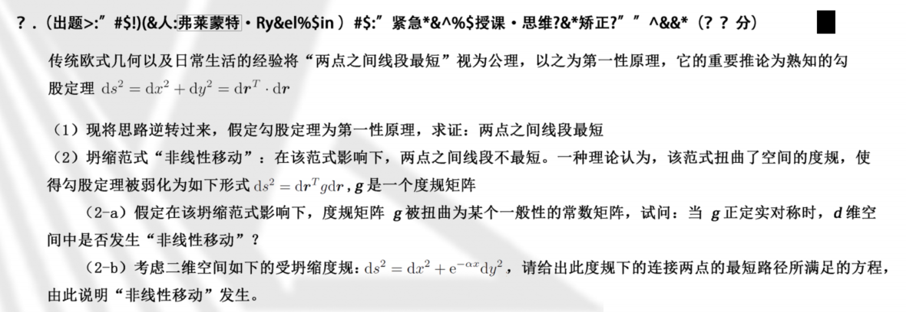
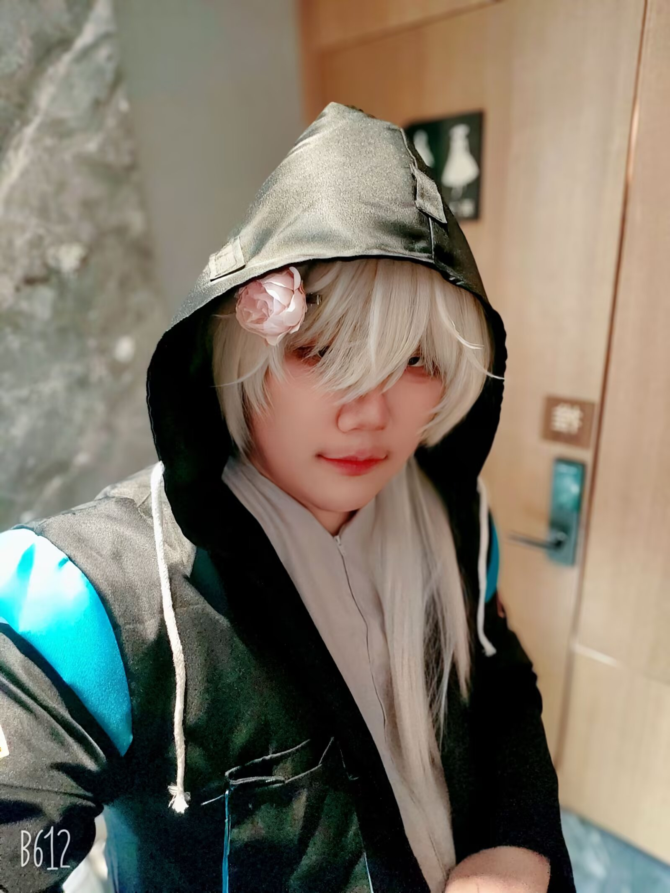

[整活无料] 2026 年普通泰拉高等学校招生统一考试
合作者：柳树（主策划）、一七能、EasyRoy、柚子狼、钰喵、法拉利，其他命题组成员，以及所有参与试卷发放的朋友们
在 2026 年五一期间正式于上海的各项明日方舟活动（包括但不限于四天八场音律联觉、ACF 明日方舟创作者协会、 上海明日方舟 only 绒绒贝利、明日方舟 only 春日游园会、次圆圆街区、各项联名活动……）大规模发放的无料(?)
贡献
试卷的本体文件可以在此获取 pdf。
合作者：柳树（主策划）、一七能、EasyRoy、柚子狼、钰喵、法拉利，其他命题组成员，以及所有参与试卷发放的朋友们
在 2026 年五一期间正式于上海的各项明日方舟活动（包括但不限于四天八场音律联觉、ACF 明日方舟创作者协会、 上海明日方舟 only 绒绒贝利、明日方舟 only 春日游园会、次圆圆街区、各项联名活动……）大规模发放的无料(?)
试卷的本体文件可以在此获取 pdf。
合作者：柳树（主策划）、椰子树、三三、EasyRoy、钰喵、法拉利、红姜、左君，其他命题组成员，以及所有参与试卷发放的朋友们
在 2025 年五一期间正式于上海的各项明日方舟活动（包括但不限于四天八场音律联觉、ACF 明日方舟创作者协会、 上海明日方舟 only 绒绒贝利、明日方舟 only 春日游园会、各项联名活动……）大规模发放的无料(?)
其实这段文字是从上面一段复制下来微调的

合作者（一定要说的这么严肃吗.jpg）：米奈（妆娘，我的朋友）、格子（毛娘、我的朋友）

其实下面都是凑数的，显得我深度参与了很多活动.jpg